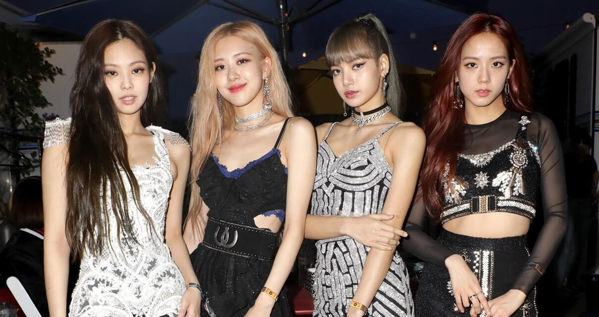
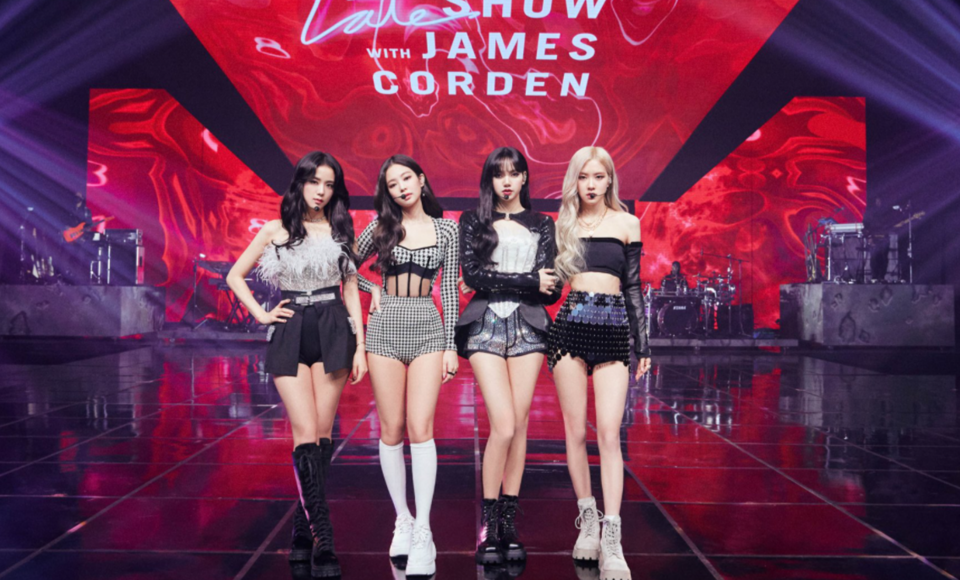

Blackpink la Primera GiraEn 2018, fue anunciado que el grupo regresaría con una reedición titulada Re:Blackpink.39 El EP fue lanzado el 28 de marzo y contiene todas las canciones previamente lanzadas en japonés y coreano.40 El 15 de junio, el grupo lanzó su primer EP titulado Square Up.41 El sencillo "Ddu-Du Ddu-Du" debutó en el número 17 de la Official Trending Chart del Reino Unido, convirtiéndose en el primer grupo K-pop femenino en entrar en la lista desde su lanzamiento en 2016.42 El sencillo también debutó en los Billboard Hot 100 como la canción de mayor éxito de todos los tiempos por un grupo de K-pop femenino, ingresando a la lista en el puesto N.º 55 con 12,4 millones de reproducciones en EE. UU. y 7.000 descargas vendidas en la semana de seguimiento, que terminó el 21 de junio de 2018, según Nielsen Music.43 |  |
Premios y nominacionesEl año 2019, con el lanzamiento de su mini álbum Kill This Love, recibió nominaciones como mejor grupo en los MTV Video Music Awards, MTV Europe Music Awards, MTV Millennial Awards, MTV Millennial Awards Brasil, Nickelodeon Kids' Choice Awards y Nickelodeon Kids' Choice Awards México, y logró quedarse con sus primeros cinco premios internacionales más importantes, siendo tres en los People's Choice Awards, como el Mejor Grupo, Mejor Vídeo Musical («Kill This Love») y Mejor Gira de 2019 por su tour Blackpink World Tour (In Your Area);240 un premio en los Teen Choice Awards por su canción «Ddu-Du Ddu-Du»;241 y el premio a Mejor Artista Coreano y Japonés del Año en los Tencent Music Entertainment Awards de China. |
 |
Sus canciones mas sonados fueron;